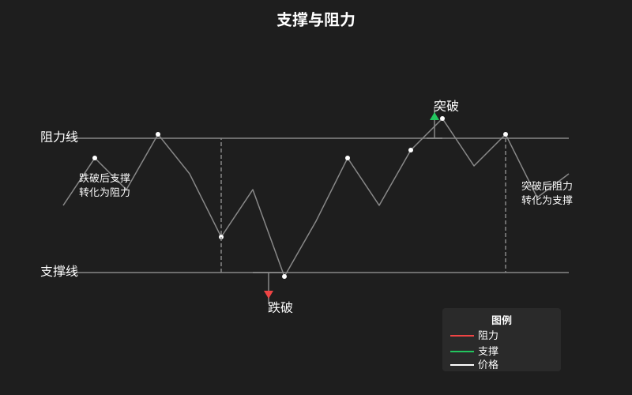

趋势交易
“趋势是你的朋友。” —— 华尔街格言
趋势交易是最经典的交易策略之一，核心理念是：顺着市场的主要方向交易，不抄底不摸顶，只做趋势的跟随者。
本章介绍趋势的定义、道氏理论、趋势线画法、以及支撑阻力的转化。

一、趋势的定义
趋势是价格运动的方向。根据价格的高点和低点的变化，趋势可以分为三种。
上升趋势 (Uptrend)
更高的高点 + 更高的低点（Higher Highs, Higher Lows）
- 每一个后续的高点（Peak）都高于前一个高点
- 每一个后续的低点（Trough）都高于前一个低点
- 表现形式：价格沿着一条向上倾斜的通道运动
下降趋势 (Downtrend)
更低的高点 + 更低的低点（Lower Highs, Lower Lows）
- 每一个后续的高点都低于前一个高点
- 每一个后续的低点都低于前一个低点
- 表现形式：价格沿着一条向下倾斜的通道运动
横盘趋势 (Sideways / Range)
高点和低点基本持平，没有明显的方向
- 价格在一个水平区间内上下震荡
- 多空双方力量均衡
- 表现形式：箱体震荡
趋势的三个时间维度
| 级别 | 时间跨度 | 说明 |
|---|---|---|
| 主要趋势 | 1年以上 | 牛市/熊市的大方向 |
| 次级趋势 | 3周-数月 | 主要趋势中的回调/反弹 |
| 小趋势 | 数天-数周 | 日常波动，噪音较多 |
交易时，大周期定方向，小周期找入场点。
二、道氏理论 (Dow Theory)
道氏理论是现代技术分析的基石。它由 Charles Dow（道琼斯指数创始人）提出，核心原则至今有效。
六大基本原则
原则1：价格反映一切
所有已知信息（基本面、情绪、消息）都已反映在价格中。无需寻找价格以外的原因。
原则2：市场有三种趋势
- 主要趋势 (Primary Trend)：持续 1 年以上的大方向
- 次级趋势 (Secondary Trend)：主要趋势中的反向修正，持续 3 周-数月
- 小趋势 (Minor Trend)：日常波动，持续时间 < 3 周
原则3：主要趋势有三个阶段
| 阶段 | 上升趋势 | 下降趋势 |
|---|---|---|
| 第1阶段（积累/派发） | 少数聪明资金买入 | 少数聪明资金卖出 |
| 第2阶段（跟进） | 大众追涨入场 | 大众恐慌卖出 |
| 第3阶段（高潮/恐慌） | 大众疯狂买入，聪明资金派发 | 最后的恐慌抛售，聪明资金买入 |
原则4：指数必须相互确认
道指和标普 500 必须同时确认趋势方向。如果一个创新高，一个不创新高，趋势可能不可靠。
原则5：成交量验证趋势
- 上涨趋势中：价涨量增，价跌量缩（健康的上涨）
- 如果价涨量缩：趋势可能接近尾声
原则6：趋势一旦确立，假设它持续直到反转信号出现
不要随意猜顶和抄底。趋势改变需要明确的信号。
三、趋势线画法
趋势线是最简单但最有效的技术分析工具之一。
上升趋势线
- 画法：连接上升趋势中的两个或更多有效低点
- 方向：从下向上倾斜
- 作用：作为支撑线——价格回落到趋势线附近时可能反弹
下降趋势线
- 画法：连接下降趋势中的两个或更多有效高点
- 方向：从上向下倾斜
- 作用：作为阻力线——价格反弹到趋势线附近时可能受阻
画趋势线的核心要点
- 至少需要两个点才能连成一条线，第三个点确认这条线的有效性
- 连实体还是连影线？——一般连影线（影线代表价格触及的位置）
- 越陡峭的趋势线越脆弱：45 度左右的趋势线最为可靠，超过 60 度的趋势线很容易被跌破
- 接触次数越多越有效：被测试 3 次以上的趋势线比只测试 2 次的更可靠
- 趋势线需要调整：随着趋势发展，需要根据新的低点/高点不断调整
趋势线的作用
- 在趋势中：作为支撑（上升趋势线）或阻力（下降趋势线）
- 被跌破：上升趋势线被跌破，可能是趋势反转或深度回调的信号
- 被突破：下降趋势线被向上突破，可能是趋势转强的信号
趋势通道
在趋势线的基础上，可以在另一侧画一条平行线，形成一个通道。
- 上升通道：连接低点（下轨）+ 平行线连接高点（上轨）
- 下降通道：连接高点（上轨）+ 平行线连接低点（下轨）
通道交易：
- 上升通道：下轨买入，上轨卖出
- 下降通道：上轨做空，下轨止盈
四、支撑与阻力转化
支撑和阻力是技术分析中最核心的概念之一。一旦被有效突破，二者互换角色。
支撑 (Support)
支撑是价格下跌到某个位置后停止下跌并反弹的水平。
支撑形成的原因：
- 前期低点
- 趋势线
- 重要均线（如 50 日线、200 日线）
- 整数关口（心理价位）
- 前期密集成交区
阻力 (Resistance)
阻力是价格上涨到某个位置后停止上涨并回调的水平。
阻力形成的原因：
- 前期高点
- 趋势线
- 重要均线
- 整数关口
- 前期套牢盘密集区
支撑与阻力的转化
这是最重要的知识点：
被有效突破的阻力 → 变为未来的支撑 被有效跌破的支撑 → 变为未来的阻力
举例：
- 股价突破 100 元（前期阻力位）后回落到 100 元附近，100 元将从阻力变为支撑
- 股价跌破 50 元（前期支撑位）后反弹到 50 元附近，50 元将从支撑变为阻力
如何判断突破有效？
| 判断方法 | 说明 |
|---|---|
| 3% 原则 | 收盘价超出阻力/支撑位 3% 以上 |
| 2天原则 | 连续 2 天收盘在阻力/支撑位之外 |
| 成交量确认 | 突破时放量 |
| 回踩确认 | 突破后价格回踩阻力/支撑位并确认反向 |
如何画关键支撑和阻力
- 找明显的高低点：寻找图中明显的前期高点和前期低点
- 找密集成交区：价格反复触及的区域
- 画水平线：在这些位置画水平线
- 关注收盘价：收盘价是否突破比盘中突破更可靠
支撑阻力的层次
- 强支撑/阻力：多次测试未被突破的位置
- 弱支撑/阻力：只测试过一次的位置
- 越大的时间级别支撑阻力越强：周线级别的支撑比日线级别的支撑更可靠
五、趋势交易实战流程
入场流程
- 确定大趋势：查看周线或日线，确定当前主要趋势方向
- 等待回调：不追涨不杀跌，等待价格回调至支撑位
- 确认支撑有效：价格在支撑位附近出现止跌信号（锤子线、吞没形态等）
- 入场：在确认信号出现后入场
- 设置止损：止损设在支撑位下方（上升趋势中）
出场流程
- 追踪止盈：随着趋势发展，不断提高止损位（叫”移动止损”或 Trailing Stop）
- 趋势线被跌破：如果价格跌破上升趋势线，考虑减仓或清仓
- 目标位到达：前期重要阻力位或通道上轨
不做趋势交易的情况
- 横盘整理期（没有趋势就不做趋势交易）
- 极度震荡的市场（趋势不清晰）
- 重大消息发布前（可能导致趋势突变）
💡 核心心法：趋势交易不是精准抄底摸顶，而是捕捉中间最确定的波段。放弃鱼头和鱼尾，只吃鱼身。